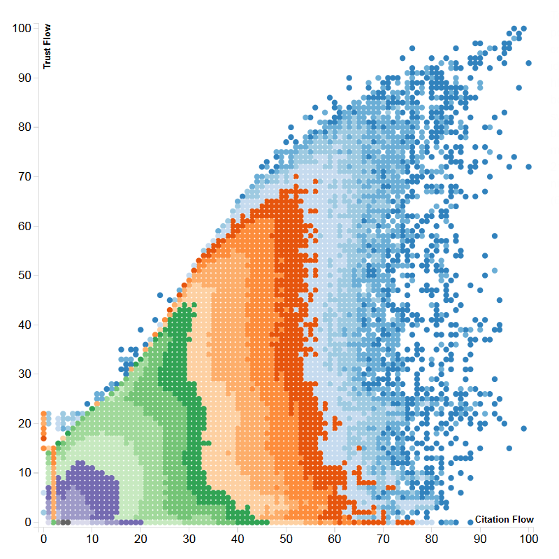
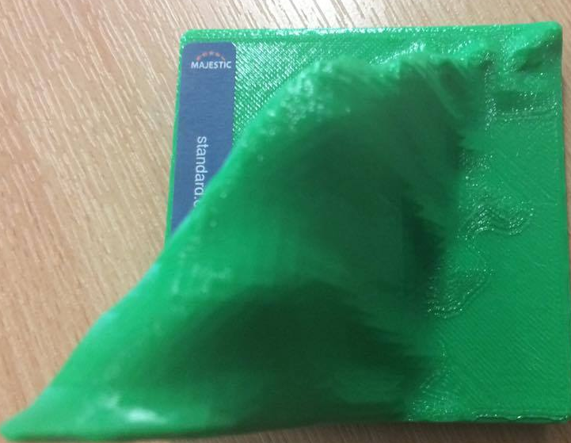

A Joint Citation/Trust Flow Metric
Tom Goodman
Tom Goodman
Trust Flow and Citation Flow are Majestic's iconic descriptors for sites,
but how do you combine these into a single, descriptive metric?
This is what we're going to try and answer.

This is Majestic's heatmap of the internet.
It shows where every site on the internet falls, based on their Trust and Citation flows.
On the y-axis is Trust Flow, which is how trustworthy a site is, based on it's backlinking sites.
On the x-axis is Citation Flow, which is how linked-to a site is.
Each coloured band contains the same number of sites as eachother.
If we take points at the visual "tip" of each of the coloured band sections - denoted by the arrows - it's clear that it would be possible to plot a curve that runs along the points.
This curve runs along the ridge of the three dimensional model:

Along the z-axis of this model is the total number of sites that fall at that
point, which means that the sites that fall on the ridge are the "average" sites.
By performing non-linear regression on the data points,
it results in a sigmoidal function (an S-shaped curve) as follows:
$$f(c) = 18087660 - \frac{18087660}{(0.0109887c^{1.61008}+1)^{1.86131*10^{-6}}}$$
This takes any given Citation Flow, c, and will return the Trust Flow that lies on the ridge of the model.
As part of our metric, it will be useful to work out the shortest distance from any point on the graph to this curve.
But HOW do we do this?
In order to find the distance from any arbitrary point (x, y) to the curve that we defined before, we will work
out how to find the distance from (x, y) to any given curve. Take the graph of $y=x^{3}$, for example:
After adding an arbitrary point, A$(x_{0}, y_{0})$, it is possible to draw both a vertical and horizontal line
from that point to touch the curve. These points lie at B$(x_{0},f(x_{0}))$ and C$(f^{-1}(y_{0}),y_{0})$ respectively,
and subtend an angle of $90^{\circ}$.
From here, it is possible to draw a further line, between points B and C,
forming the hypotenuse of the right-angled triangle, BAC.
The length of the line AB is the difference in the y-values of the two points - $y_{0}-f(x_{0})$, and the length of the line AC is the difference in the x-values of the two points - $(f^{-1}(y_{0})-x_{0})$. Furthermore, the length of the hypotenuse, BC, can be found via Pythagoras' Theorem: $$\sqrt{(f^{-1}(y_{0})-x_{0})^{2} + (y_{0}-f(x_{0}))^{2}}$$
The required value for the basic approximation is the height of the triangle BAC. Because it is right-angled, the area is equal to $\frac{|AB||AC|}{2}$. The area of any triangle is also equal to $\frac{|BC|h}{2}$. By setting these expressions equal to one another, and rearranging, the resulting expression for height is: $$ h=\frac{|AB||AC|}{|BC|} = \frac{(f^{-1}(y_{0})-x_{0})(y_{0}-f(x_{0}))}{\sqrt{(f^{-1}(y_{0})-x_{0})^{2} + (y_{0}-f(x_{0}))^{2}}}$$ To take a greater proportion of cases into account, it is worth taking the minimum value of h, $|AB|$ and $|AC|$. For example: $$ h=min\Bigg(\Bigg(\frac{(f^{-1}(y_{0})-x_{0})(y_{0}-f(x_{0}))}{\sqrt{(f^{-1}(y_{0})-x_{0})^{2} + (y_{0}-f(x_{0}))^{2}}}\Bigg),\ |(f^{-1}(y_{0})-x_{0})|,\ |(y_{0}-f(x_{0}))|\Bigg)$$
The previously derived expression for the approximation can often wildly over or underestimate, given the right circumstance. Take for example, the following attempt to apply the current method:
In this example, the point that h reaches is nowhere near the closest point on the line - there is still a lot of space between them. Consider then, the midpoint of the hypotenuse - From the midpoint, it is possible to apply the same process as from the original point, and then take the sum of both results. For example:
It is clear that the sum of the two calculated values ($h1 + h2$) is a significantly more
accurate estimate of the distance to the curve.
Define a function, h(x,y), that returns the minimum value in the set that contains the
result of the auxiliary function, a(x,y), the vertical distance and the horizontal distance:
$$h(x, y) = min(\ a(x,y),\ |(f^{-1}(y)-x)|,\ |(y-f(x))|)$$
Then define the auxiliary function, a(x,y), that handles the recursive aspect of the approximation:
$$a(x,y) = \Bigg( \frac{(f^{-1}(y)-x)(y-f(x))}{\sqrt{(f^{-1}(y)-x)^{2}+(y-f(x))^{2}}} \Bigg)\ +\ a\Bigg( \frac{x+f^{-1}(y)}{2}, \frac{f(x)+y}{2} \Bigg)$$
By applying the original method to the following curve, it is clear that it will overestimate the distance significantly - in the same way that the previous example originally underestimated it.
The even more troubling flaw with the current method, is that if we continue the approximation and apply the recursive method, the overestimation will only become higher:
The answer to this, is to somehow subtract the heights that occur below the curve from the total, resulting in a close approximation once again. But how is it possible to change the sign of the height based on whether or not the point lies below the curve?
If the point lies below the curve, then intuitively, $y-f(x)$ will be negative. It is now imperative to find a way to change the sign without changing the value of the distance itself. This can be achieved by multiplying the height by -1. The key to working out how to solve this issue, is to exploit the identity that anything divided by itself is equal to 1 ($\frac{a}{a}=1$). There is; however, one more piece to the puzzle.
Currently, this will only return 1, not -1.
How then, is it possible to manipulate $\frac{y-f(x)}{y-f(x)}$ in such a way that it will return -1 if $y-f(x)$ is negative?
The answer to this is by using the modulus function ($|x|$). Because this always returns the positive value, the result of $\frac{y-f(x)}{|y-f(x)|}$ will be 1 if $y-f(x)$ is positive, and -1 if $y-f(x)$ is negative.
Thus, if the product of $\frac{y-f(x)}{|y-f(x)|}$ and the distance is returned each time, the problem
of overestimating is solved. This leaves the auxiliary function:
$$a(x, y) = \Bigg( \frac{y-f(x)}{|y-f(x)|} \Bigg) \Bigg( \frac{(f^{-1}(y)-x)(y-f(x))}{\sqrt{(f^{-1}(y)-x)^{2}+(y-f(x))^{2}}} \Bigg)\ +\ a\Bigg( \frac{x+f^{-1}(y)}{2}, \frac{f(x)+y}{2} \Bigg)$$
There is, however, one final issue with the current implementation - the distance from a point below the curve to the curve itself will always be negative. It is impossible to have a negative distance in this sense, so a small alteration to the function h(x,y) must be made. The result of the auxiliary function must be passed to a modulus function: $$h(x, y) = min(\ |a(x, y)|,\ |(y-f(x))|,\ |(f^{-1}(y)-x)|\ ) $$
Consider the following application of the current approximation:
In this example, the actual value lies to the left of the point $x_{0}, y_{0}$. There is a chance that the approximation would currently create the triangles shown on the above diagram, and miss the actual solution that lies to the left. A solution to this, would be to reflect the curve, f(x), in the line $y=x_{0}$, and then use the approximation again (which is the same as drawing a triangle to the left). To reflect f(x) in $y=x_{0}$, it must first be reflected it in the y-axis, giving $f(-x)$. Then it must be translated right by $2x_{0}$, which leaves the resulting curve as $f(2x_{0}-x)$.
$$h(x, y) =min(l(x,y), r(x,y))$$ $$g(x) = f(2x_{0}-x)\ where\ x_{0}\ is\ the\ x-value\ of\ the\ arbitrary\ point.$$ $$l(x,y) = min(\ |a_{1}(x, y)|,\ |(y-g(x))|,\ |(g^{-1}(y)-x)|\ )$$ $$r(x,y) = min(\ |a_{2}(x, y)|,\ |(y-f(x))|,\ |(f^{-1}(y)-x)|\ ) $$ $$a_{1}(x, y) = \Bigg( \frac{y-g(x)}{|y-g(x)|} \Bigg) \Bigg( \frac{(g^{-1}(y)-x)(y-g(x))}{\sqrt{(g^{-1}(y)-x)^{2}+(y-g(x))^{2}}} \Bigg)\ +\ a\Bigg( \frac{x+g^{-1}(y)}{2}, \frac{g(x)+y}{2} \Bigg)$$ $$a_{2}(x, y) = \Bigg( \frac{y-f(x)}{|y-f(x)|} \Bigg) \Bigg( \frac{(f^{-1}(y)-x)(y-f(x))}{\sqrt{(f^{-1}(y)-x)^{2}+(y-f(x))^{2}}} \Bigg)\ +\ a\Bigg( \frac{x+f^{-1}(y)}{2}, \frac{f(x)+y}{2} \Bigg)$$
If you didn't read the maths section - given a site with citation, $c_{0}$, and trust, $t_{0}$, the following equation may be used to work out it's distance from the "main sequence" of sites. $f(c)$ and $f^{-1}(c)$ depend on the citation of the given site, and can be found on the next slide. $$h(c, t) =min(l(c,t), r(c,t))$$ $$g(c) = f(2c_{0}-c)$$ $$l(c,t) = min(\ |a_{1}(c, t)|,\ |(t-g(c))|,\ |(g^{-1}(t)-c)|\ )$$ $$r(c,t) = min(\ |a_{2}(c, t)|,\ |(t-f(c))|,\ |(f^{-1}(t)-c)|\ ) $$ $$a_{1}(c, t) = \Bigg( \frac{t-g(c)}{|t-g(c)|} \Bigg) \Bigg( \frac{(g^{-1}(t)-c)(t-g(c))}{\sqrt{(g^{-1}(t)-c)^{2}+(t-g(c))^{2}}} \Bigg)\ +\ a\Bigg( \frac{c+g^{-1}(t)}{2}, \frac{g(c)+t}{2} \Bigg)$$ $$a_{2}(c, t) = \Bigg( \frac{t-f(c)}{|t-f(c)|} \Bigg) \Bigg( \frac{(f^{-1}(t)-c)(t-f(c))}{\sqrt{(f^{-1}(t)-c)^{2}+(t-f(c))^{2}}} \Bigg)\ +\ a\Bigg( \frac{c+f^{-1}(t)}{2}, \frac{f(c)+t}{2} \Bigg)$$
(This could be condensed by passing functions, but for the purpose of explanation it's generally better to be verbose and clear)
Because the inverse of the sigmoidal function uses numbers too big for computers (), we can instead model sections of the graph with simpler functions:
The first section (c = 1-19) of the graph can be modelled with quadratic regression. $$f(c) = 3.959819 + 2.228665c - 0.07230238c^{2}$$ $$f^{-1}(c) = 15.4121 + 1.38308033*10^{-6} \sqrt{|1.52804125862547*10^{14} - 7.230238*10^{12} y|}$$
The second section (c = 20-69) of the graph can be modelled with linear regression. $$f(c) = 1.000339c + 13.1116$$ $$f^{-1}(t) = -0.999661(13.1116-t)$$
The third section (c = 70-100) of the graph can be modelled with linear regression. $$f(c) = 0.6077348c + 39.09392$$ $$f^{-1}(t) = -1.64545(39.09392-t)$$
To calculate our joint metric, we want to take into account the distance from our site's location (c,t) to the curve. Let dist(c,t) be our function that calculates the distance from any arbitrary point to the "Main Sequence" of sites on the internet.
Currently, the lower the distance the better, but we want to have a higher score for a shorter distance, so we take the distance from our site (c,t) away from the maximum possible distance - dist(100,0).
The 'best' sites will be at (100,100), so we should also take the Euclidean distance (straight-line distance) from our site (c,t) to (100,100) into account too. Once again, we want the difference between this and the distance from the furthest point, (0,0). $$ \sqrt{(0+100)^{2}+(0+100)^{2}} - \sqrt{(x+100)^{2} + (y+100)^{2}}$$
We will call these two values distDiff and maxDistDiff respectivsely, and our final metric will be:
distDiff * maxDistDiff